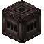
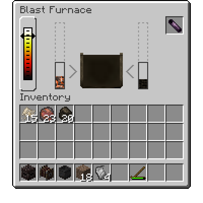

Сыродутная печь
Высокая печь — это продвинутое устройство, используемое для создания Стали. Смешивая Железные руды, Древесный уголь и флюс в контролируемой горячей среде, вы можете создать металл, прочнее чугуна или кованого железа.
Чтобы получить высокую печь, вам сначала понадобится Тигель и много Кованых железных листов.


Создание самой сыродутной печи требует Тигля, а также нескольких Кованых железных листов, которые вам понадобятся.
Затем вам нужно будет построить высокую печь вместе с ее Дымоходом. Дымоход должен быть составлен из Огнеупорных кирпичей, так как они достаточно прочны, чтобы выдержать интенсивный жар. Затем его следует выложить Коваными железными листами для дополнительного укрепления. Для листов также могут быть использованы более прочные металлы, такие как Сталь, если это желательно.
Сыродутная печь
Структура: tfc:blast_furnace
Сыродутная печь с дымоходом минимальной высоты.
Дымоход высокой печи может состоять до пяти слоев - каждый слой требует четырех Огнеупорных кирпичей и двенадцати Кованых железных листов, чтобы завершить. Наличие большего количества слоев увеличивает общую вместимость высокой печи, позволяя плавить больше стали за один раз. Каждый слой дымохода, до максимума пяти, позволяет высокой печи вмещать на четыре дополнительных предмета руды.
Чтобы использовать высокую печь, вы должны бросить предметы в верхнюю часть дымохода - для производства стали, вы должны добавить равное количество предметов Железных руд и флюса. Любые железные руды или предметы, которые могут плавиться в Чугун, подойдут. Вам также нужно будет добавить Древесный уголь, который будет расходоваться по мере работы высокой печи.
Использование высокой печи откроет интерфейс высокой печи, видный справа. В этом интерфейсе вы увидите индикаторы содержания руды и топлива высокой печи. В верхнем правом слоте должен находиться Фурма, металлическая труба, используемая для направления воздуха в высокую печь, необходимая для достижения максимальных температур для плавки стали. Фурму можно выковать на Наковальне.
Интерфейс сыродутной печи
Вам также понадобится Мех, чтобы высокая печь достигла температуры, при которой железо расплавится. Его можно установить на любой из четырех сторон высокой печи.
Структура: tfc:full_blast_furnace
Сыродутная печь полного размера с прикрепленными мехами и тиглем.
Наконец, чтобы начать, зажгите высокую печь с помощью Кремня и стали или Огниво. Она начнет нагревать руды внутри. Убедитесь, что в высокой печи продолжает быть топливо, и используйте мех, чтобы добавить воздух в высокую печь после того, как ее внутренняя температура достигнет максимума для угля. После нагрева руды внутри они расплавятся и превратятся в Чугун.
Этот жидкий металл будет капать в любой металлический контейнер для жидкости, установленный непосредственно под высокой печью, такой как Тигель. Его можно отлить в формы для слитков из выходного слота тигля и обработать в Сталь.